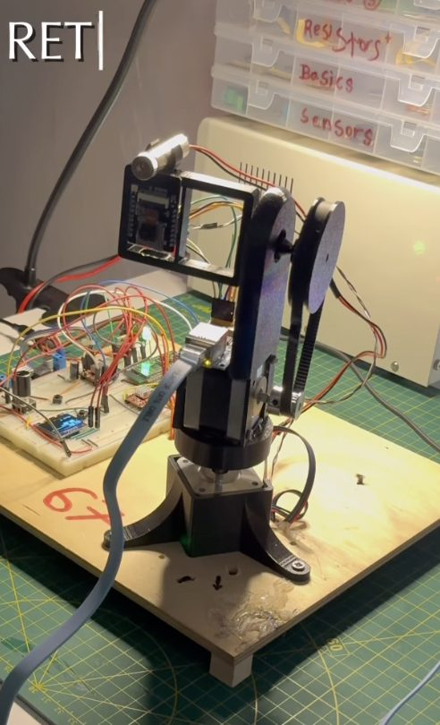
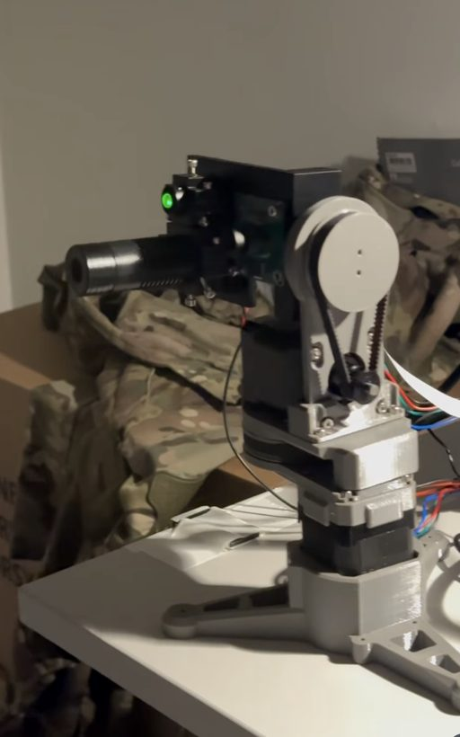
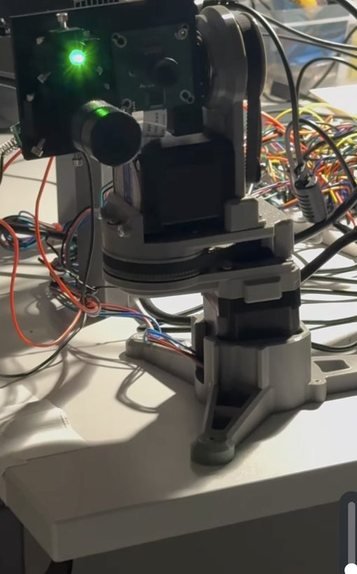

Team ZeroDrift · SIH 2026 PS26169 · OPTIONAL, AFTER the direct-drive rig works. For today's shopping use the short list: ZeroDrift_MK2_Amar_Shopping_List.pdf. This document is the long reference: every part, the analysis of the reference turrets, and the GT2 belt on tilt (section C and page G).
| # | Ask for | Exact spec / check at the counter | Qty | ≈ ₹ | |
|---|---|---|---|---|---|
| 1 | 5 mm rigid flange coupling also called "5 mm shaft flange coupler / wheel hub for 5 mm shaft" | Bore 5 mm (a NEMA17 shaft must slide in snugly). Rigid metal, not the flexible/spring type. Has a grub screw. Flange has 4 holes (M3). | 2 | 160–300 | |
| 2 | M3 brass standoff, 40 mm or 20 mm ×4 (male–female, they screw together) | Brass (gold), M3 thread. Carries the camera head. Not plastic/nylon. | 2 | 40–80 | |
| 3 | M3 standoff, 15 mm (brass or nylon) | Raises the tilt L-bracket above the pan encoder | 4 | 30–60 | |
| 4 | M3 screws + nuts + washers pack | Lengths 8, 10, 16, 20 mm, about 10 of each; 30 nuts; 20 washers | 1 set | 60–120 | |
| 5 | Resistor 100 Ω, ¼ W brown-black-brown-gold | Decoy LED. Buy 5 (they cost ₹1 each). | 5 | 5–10 | |
| 6 | Resistor 220 Ω, ¼ W red-red-brown-gold | Beacon LED. Buy 5. | 5 | 5–10 | |
| 7 | Red LED, high-brightness, 10 mm (5 mm OK) | A second red LED for the decoy. Through the camera's red filter a white LED looks dim, so a steady red decoy is the fair test. Buy 2. | 2 | 10–20 | |
| 8 | Electrolytic capacitor 100 µF, 25 V (or 35 V) | One across each A4988 motor supply. Buy 3 (1 spare). Skip if you already have 2. | 3 | 15–30 | |
| 9 | Clear acrylic sheet 3 mm, A4 size | For the pan disc, tilt disc, encoder arms and head plate. Your white sheet is fine for the base; the small parts must be stiff. | 1 | 120–200 | |
| 10 | Red transparent acrylic 2 mm (small piece) or red cellophane / red gel sheet | Filter over the camera lens so bright rooms don't blind it. Hold it over your phone camera: the room should look dim red. | 1 | 20–80 | |
| 11 | Allen key set (1.5–4 mm) | For the grub screws on the couplings and pulleys | 1 | 60–120 |
| # | Ask for | Exact spec / check at the counter | Qty | ≈ ₹ | |
|---|---|---|---|---|---|
| 12 | 12 V 2 A DC adapter (SMPS, wall plug)MUST | Output 12 V, 2 A, 5.5 × 2.1 mm barrel plug. Powers the motors on the bench and at the demo table, so the 18650s are only a backup. | 1 | 200–350 | |
| 13 | DC female barrel jack to screw terminal | 5.5 × 2.1 mm, matches the adapter. Screw terminals marked + and −. | 2 | 30–60 | |
| 14 | TP4056 18650 charging module with protection (USB-C or micro-USB) | Charges one 18650 at a time, out of the holder. Needed because the B3 charger only charges through a balance plug. | 1 | 30–60 | |
| 15 | Hook-up wire 22 AWG, red + black | 1 m each, for the 12 V motor supply (jumper wires are too thin for this) | 2 m | 30–60 | |
| 16 | USB cable for the 2nd Nano | Check the Nano's port first: Mini-USB or USB-C. Skip if you have one. | 1 | 60–120 |
Gives tilt 3× finer steps and 3× more holding torque. The small pulley goes on the tilt motor and the big pulley on a separate 8 mm axle that carries the head. Buy these now so you don't need a second trip. Build the direct-drive rig first and add the belt once it works (page 4).
| # | Ask for | Exact spec / check at the counter | Qty | ≈ ₹ | |
|---|---|---|---|---|---|
| 17 | GT2 timing pulley, 20 teeth, 5 mm bore | For 6 mm wide belt. Bore 5 mm (fits the NEMA17 shaft). Aluminium with 2 grub screws. | 1 | 80–150 | |
| 18 | GT2 timing pulley, 60 teeth, 8 mm bore | For 6 mm belt. Bore 8 mm (for the 8 mm axle). If they only have 60T with 5 mm bore: take it, and buy a 5 mm rod and KFL005 bearings instead of 8 mm ones (same shape). | 1 | 200–400 | |
| 19 | GT2 closed-loop timing belt, 6 mm wide the "rubber" (a ring, no joint) | Length 232 mm (first choice). Also OK: 280 mm or 200 mm. If cheap, buy two different lengths. Must be GT2 (2 mm tooth pitch), same as the pulleys. | 1–2 | 80–150 each | |
| 20 | KFL08 flange bearing (2-bolt, 8 mm bore) | Zinc flange with a bearing inside. 8 mm bore, spins smoothly with no grinding. Bolts onto a flat plate. | 2 | 120–250 | |
| 21 | 8 mm steel rod, 100 mm smooth rod / linear shaft; or an M8 × 100 bolt with a smooth shank | The tilt axle. Straight, smooth, fits the KFL08 and the 60T pulley. | 1 | 60–150 | |
| 22 | 8 mm rigid flange coupling | Bore 8 mm. Bolts the head plate to the tilt axle. | 1 | 100–180 | |
| 23 | 8 mm shaft collar (lock collar with grub screw) | Stops the axle sliding sideways | 2 | 40–80 | |
| 24 | M4 × 20 screws + nuts | For the KFL08 flanges and the motor-to-plate mounting | 8 | 20–40 | |
| 25 | Aluminium flat plate 3 mm, about 70 × 160 mm (or 5 mm acrylic) | The upright that holds the tilt motor (bottom) and the axle bearings (top). A hardware shop can cut it. | 1 | 60–150 | |
| 26 | Small aluminium angle / L-bracket (≈ 30 × 30 mm) | Bolts the upright to the pan platform | 2 | 20–60 |
| # | Ask for | Exact spec / check at the counter | Qty | ≈ ₹ | |
|---|---|---|---|---|---|
| 27 | ABS plastic project box / enclosure, ≈ 100 × 60 × 25 mm | One for the beacon (Nano + LED + switch), one for the decoy (3×AA holder + LED + switch). Any small plastic box with a lid works; a tiffin box is fine. | 2 | 80–150 each | |
| 28 | Laser module holder / clip or a 6–12 mm cable P-clip | Holds the laser on the head plate so it points exactly where the camera looks. Hot glue works too. | 1 | 20–60 | |
| 29 | Double-sided foam tape (thin, strong) | Mounts the breadboard and camera board. Skip if you have some (the red roll in your photo is fine). | — | — |
No box is needed for the head. Both turrets in your zip use an open plate, with the camera board and laser screwed straight onto it. It's lighter and easier to balance. Cut it from the 3 mm acrylic (#9).
| # | Ask for | Spec | Qty | ≈ ₹ | |
|---|---|---|---|---|---|
| 30 | Superglue (Fevikwik) or 5-minute epoxy (Araldite) | Glues the magnets on the axis centres | 1 | 20–120 | |
| 31 | Zip ties, small (100 mm) | Cable service loops | 1 pk | 30 | |
| 32 | Heat-shrink tube assortment (or insulation tape) | Covers the soldered LED and resistor legs | 1 | 30–60 | |
| 33 | Solder wire (if you have none) | For the TCA9548A and AS5600 header pins | 1 | 40–80 | |
| 34 | USB-C to USB-A hub only if the laptop has USB-C ports only | The Nano and the webcam must be plugged in at the same time | 1 | 300–800 | |
| Estimated total, A + B + D + E (without the hub): ≈ ₹1,100–2,000 · with the belt parts (C): add ≈ ₹1,000–1,800 | |||||



Verdict: both are our MK2 with belts added. We copy three things: (1) the tilt belt 3:1, (2) the camera and laser on one open plate, (3) the head's weight centred on the tilt axle (balanced, so the motor doesn't strain). Pan stays direct drive: our pan already has an encoder that measures it, and a pan belt needs a big printed turntable we can't make by Monday.
| Part | Before (direct drive) | Now (belted tilt) |
|---|---|---|
| Tilt drive | Head on the tilt motor shaft | Motor low on an upright plate. 20T → 60T GT2 belt, 3:1. Head on a separate 8 mm axle in 2× KFL08 bearings |
| Tilt step size | 0.11° per step | 0.0375° per step (3× finer), 3× the holding torque |
| Tilt encoder | Magnet on a disc on the motor shaft | Magnet glued on the end of the 8 mm axle. It reads the head itself, so any belt slip is caught |
| Head | Box on a brass standoff | Open plate on an 8 mm flange coupling, weight centred on the axle |
| Pan | Unchanged: direct drive on a 5 mm flange coupling, AS5600 under the platform | |
| Firmware | TILT_GEAR_RATIO 1.0 | Set TILT_GEAR_RATIO = 3.0 (keep PAN_GEAR_RATIO = 1.0) and reflash. Travel limits scale automatically (tilt stays ±18°). |
| Website | MK2 DRIVE: Direct drive | Already added: MK2 DRIVE → "Pan direct · tilt belt 20T→60T (3:1)" |
| Belt (closed loop) | 200 mm | 232 mm | 280 mm | 300 mm |
|---|---|---|---|---|
| Shaft-to-axle centre distance | 59 mm | 75 mm | 99 mm | 109 mm |
Drill the motor holes as slots (2–3 mm long, pointing towards the axle) so you can slide the motor down to tension the belt. Press the belt in the middle: it should give about 2–3 mm. Too loose skips teeth; too tight makes the motor buzz.